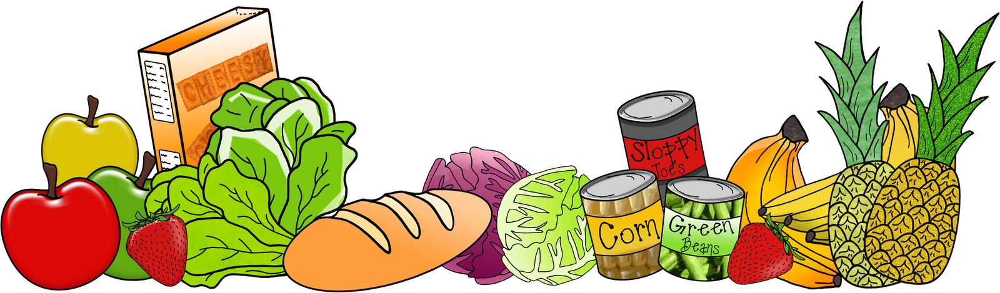

Receptes
Arrossos
Amanides
Proteïnes
Pasta
Dolços
Begudes
Cremes
Entrepans
Pizzes
Salses
Sopes
Categories
Dificultat
Temps de preparació
Temperatura
Gust
Ingredients
Arròs
Civada
Xocolata
Fulles verdes
Fruites
Fruits secs
Farines
Hortalisses
Begudes
Llegums
Bolets
Soja
Tofu